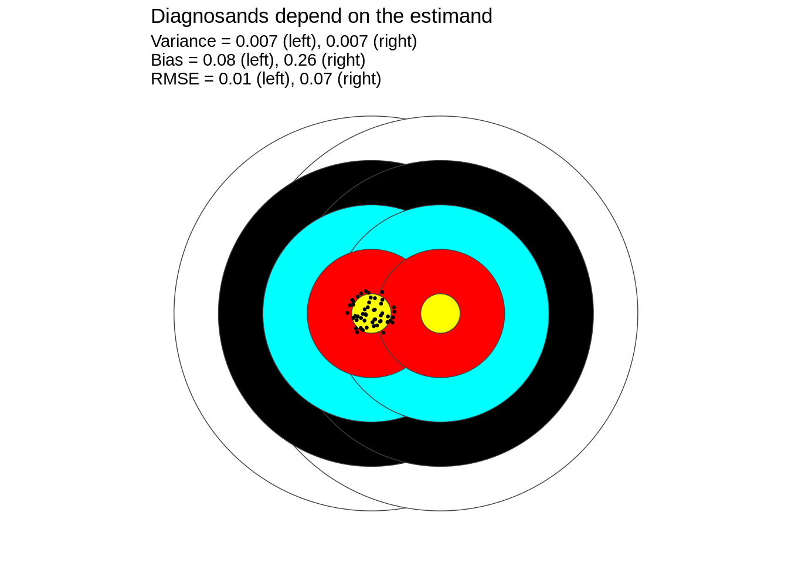
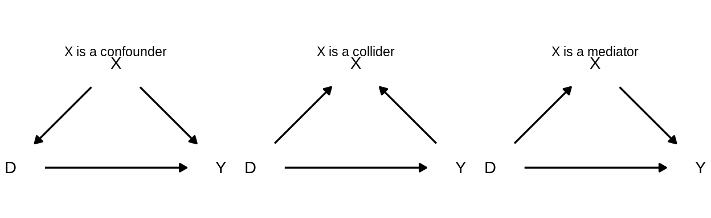

9.1 Using the Model to inform your Answer strategy
As we described in chapter 6, we can (non-parametrically) express our model of the world as a directed acyclic graph, or DAG. DAGs express some but not all parts of our model, precisely because they are nonparametric. They dont encode how variables cause each other, just whether they do. Even so, writing down a theoretical model in as parsimonious a form as a nonparametric structual causal model can guide answer strategies in an enormously powerful way. Given a DAG, we can learn whether any answer strategy would be sufficient for estimating a causal effect. Further, we can learn which variable our answer strategy must condition on, and which must be left alone.
When we want to estimate a particular causal relationship, such as the average causal effect of D on Y, we can read off the DAG whether that relationship is identified or not. The most common (and useful) criterion for identification is the backdoor criterion. If there exists an unblocked backdoor path from D to Y, then the relationship is not identified.10 A backdoor path is a causal path that begins with an arrow in to D and ends with an arrow in to Y. Backdoor paths can be blocked in two ways: conditioning the analysis on a variable along the path or not conditioning on a collider along the path.
Pearl (p.61) defines the backdoor criterion:
Given an ordered pair of variables D, Y in a DAG G, a set of variables X, satifies the backdoor criterion relative to D, Y if no node in X is a descendant of D, and X blocks every path between D and Y that contains an arrow into D. (pg. 61 Pearl primer)
With this definition in hand, we can inspect DAGs to find adjustment sets. An adjustment set is a set of variables that are conditioned upon in the answer stratety. Conditioned upon is a sufficiently vague phrase to include conditioning procedures such as controlling for a variable in a regression setting or stratifying the analysis according to those varaibles.
In general, if \(X\) is an adjustment set that satisfies the backdoor criterion, then we can estimate the conditional probability distributions of \(Y\) for each level of \(D\) using this expression.
\[\Pr(Y = y \mid do(D=d)) = \sum_x \Pr(Y = y \mid D = d, X = x) \Pr(X = x)\]
We can write the same expression using potential outcomes notation:
\[\Pr(Y_i(D_i = 1) = y) = \sum_x \Pr(Y_i(D_i = 1) = y \mid X_i = x) \Pr(X_i = x)\]
Figure XXX shows the three DAGs with the same three variables D, X, and Y. In all three cases, our inquiry is the average treatment effect of D on Y, and in all three cases, X, D, and Y are intercorrelated. In the first case, \(X\) confounds the causal relationship between D and Y, which is to say if we simply compared units with different levels of D, our estimates of the causal effect would be prone to bias. However, if we conduct the analysis separately within levels of X (that is to say, we condition on X), then combine the separate analysis, our overall estimate will be unbiased. This first DAG is the setting that analysts have in mind when controlling for observables in order to estimate causal effects.
A dangerous possibiliy, however, is represented by the second DAG. In this causal graph, X doesnt confound the relationship between D and Y instead, it is a downstream consequence of both variables. If an analyst mistakenly conditions on X, a noncausal confounding path opens up between D and Y, biasing estimates of average effect on D on Y. The contrast between the first and second graphs is an illustration of the general principle that our theoretical models guide analytic choices. In the first case, our estimates are unbiased if and only if we do control for \(X\), in the second case only if we do not control for X.
The third case describes a setting in which D has both a direct effect on Y and an indirect effect that travels through X in this case, X is a mediator. If we condition on X, our estimate of the effect D on Y is biased (X is a descendant of D). Like in the collider case, the effect is identified if we do not control for X, but is not identified if we do condition. Some intuition for the problems associated with controlling for mediations: controlling for X controls away some portion of the effect.
This example illustrates in a small way how your model of the world guides your answer strategy. In all three cases, we could in principle have the same dataset of D, X, and Y. If we followed some common regression advice, we would control for X because it is correlated with both D and Y this approach works only if X is a confounder. If X is a collider or a mediator, then this control strategy would induce bias. Without further changes to the design, no empirical tests can distinguish between these three DAGs, so in a very real way, theoretical assumptions in the Model must be relied upon to correctly choose a control strategy.

Definition: The frontdoor criterion. A set of variables X is said to satisfy the frontdoor criterion relative to an ordered pair of variables D, Y if X intercepts all directed paths from D to Y, there is no unblocked path from D to X, all backdoor paths from X to Y are blocked by D. (pg. 69 Pearl primer)
\[\Pr(Y = y \mid do(D = d)) = \sum_x \Pr(X = x \mid D = d) \sum_{d^{\prime}} \Pr(Y = y \mid D = d^{\prime}, X = x) \Pr(D = d^{\prime})\]
9.1.1 Descriptive analysis
Answering descriptive inquiries involves studying the existence of nodes and the values they take on. We might study whether a behavior exists in the world, and measure its frequency. We might also study how the frequency of the behavior varies over time and across people. Our answer strategy, following the plug-in principle, will often involve the average value of the node in the sample as an estimator of the average value in the population.
9.1.2 Causal analysis
By contrast, when we target a causal inquiry with our answer strategy, we are interested in the existence (or non-existence) of an edge between two nodes. We can label the two \(D\) (treatment) and \(Y\) (outcome).
We can only learn the answer to the inquiry when we can identify the causal effect, meaning if we had infinite data we could estimate without bias the causal effect. Identification can be obtained if the backdoor criterion is met, if the frontdoor criterion is met, or if there are no other causal relationships into both \(D\) and \(Y\). These conditions will be violated in several circumstances, including when an observed confounder \(X\) confounds the relationship between \(D\) and \(Y\) and is left unadjusted or when there is an unobserved confounder \(U\).
To reason about causal identification, we turn back to DAGs. We start with a simple DAG with four variables: a treatment \(D\), an outcome \(Y\), a observed variable \(X\) (which may or may not confound the relationship between \(D\) and \(Y\)), and an unobserved variable \(U\). There are six edges between these variables, each with three possible relations: each variable may cause (e.g., \(D \rightarrow Y\)), be caused by (e.g., \(D \leftarrow Y\)), or not be causally related to every other variable. With three possible relationships and six edges, there are \(3^6 = 729\) conceptually possible DAGs. We rule out DAGs in which other variables cause \(U\), because we defined \(U\) as an unobserved confounder. This leaves 216 possible combinations.
In the presence of possible confounding from \(X\) and/or \(U\), we have several options for our research design: we can estimate the causal effect of \(D\) on \(Y\) by controlling for the observed confounder \(X\) (or not), by invoking additional conditional independence assumptions, and by randomizing the treatment. In each case, our aim is to rule out DAGs in which the causal effect is not identified.
9.1.2.1 Causal identification through controls
The first strategy is that we can control for the observed variable \(X\) or not. Whether controlling for \(X\) enables, prevents, or does not affect the causal identification of the effect of \(D\) on \(Y\) depends on our beliefs about which DAG is the true DAG.
We illustrate possible beliefs about these edges by visualizing all of the 216 DAGs in which \(U\) is an unobserved confounder (see Figure XX). The large groups of three squares of nine group DAGs based on how \(U\) affects other variables in the model: the top left grouping of 27 DAGs represents those in which \(U\) affects all of \(D\), \(X\) and \(Y\). Within that grouping, there are three squares of nine squares. Each group of nine squares represents a set of DAGs with a single relationship between \(D\) and \(Y\). The top left group of nine are those DAGs in which \(D\rightarrow Y\).
We can rule out several of these 216 through acyclicity: the gray squares are graphs that are cyclical. (We operate under the view that cyclicity is not possible in the world, which would imply that these variables simulataneously cause each other.)
We color the rest of the squares in terms of whether controlling for \(X\) will identify the causal effect of \(D\) on \(Y\).
In some cases, the effect of \(D\) on \(Y\) will be identified regardless of whether we control for \(X\) (white squares). For example, in the left DAG, \(X\) affects \(D\) and \(U\) affects \(Y\) but neither affect both. The causal effect is identified because there is no path between \(D\) and \(Y\) except for the direct effect \(D\rightarrow Y\). In other words, neither \(X\) nor \(U\) confound the relationship, and the potential outcomes of \(Y\) are independent of \(D\).
In other cases, the effect of \(D\) on \(Y\) is identified if and only if we control for \(X\) (blue squares). These are situations in which \(X\) confounds the relationship and there is no additional confounding from unmeasured confounders. These are cases in which the potential outcomes of \(Y\) are independent of \(D\) conditional on \(X\).
However, conditioning on \(X\) is risky, because if we are not in one of the blue DAGs we might be in the purple DAGs in which the effect of \(D\) on \(Y\) is identified only if we do not condition on \(X\) (purple squares). These are DAGs in which \(X\) is a collider, opening a backdoor path between \(D\) and \(Y\) aside from the direct effect when \(X\) is conditioned on. If we knew we were in one of these DAGs, we would not control for \(X\).
There are also many situations a majority in fact, the pink squares in which the relationship between \(D\) and \(Y\) is never identified, regardless of whether you control for \(X\). Most of these result from confounding from unobservable confounders \(U\). The upper left quadrant contains the cases where \(U\) affects all of the other variables, and the middle left those where \(U\) affects \(D\) and \(Y\). In both cases, identification would require at a minimum the ability to control for these unmeasured confounders. The other situations in which causal identification fails are those in which the causal order between \(D\) and \(Y\) is reversed, i.e.\(Y\) causes \(D\). Without additional assumptions or control of the order in which variables are collected from the data strategy, we cannot rule out this possibility, the first and fourth columns of subgraphs labeled \(D\leftarrow Y\).
Without additional assumptions or manipulation in our data strategy, we cannot know where we are among the 200 acyclic DAGs represented in the plot. As a result, we are in danger either of having the effect of \(D\) on \(Y\) unidentified regardless of what we do, or of making the wrong choice to control or not to control.

9.1.2.2 Causal identification by assumption
We can address the problem of unmeasured confounding by invoking conditional independence assumptions. The ``selection-on-observables answer strategy invokes the assumption that \(D\) is statistically independent of the potential outcomes of \(Y\) given X, i.e.after adjusting for \(X\). In other words, controlling for \(X\) blocks all backdoor paths between \(D\) and \(Y\). This assumption is also known as a conditional independence or ignorability assumption.
In Figure XX, we display the 216 possible causal graphs again, ruling out in gray those that are cyclical. Among the 200 that remain, we color in the same way as under controlling for \(X\) but add a fourth color: lavender for DAGs that we rule out based on our conditional independence assumption. Those that are ruled out, in the upper left quadrants, have unobserved confounding from \(U\) that cannot be addressed by adjusting for \(X\).
Analysts who invoke this conditional independence assumption assure that there are many fewer circumstances in which identification is not possible either through controlling for \(X\) or not controlling for \(X\). However, this is a strong assumption that is not possible to test directly. Instead, the analyst must justify the assumption based on circumstantial qualitative or quantitative evidence. The task is to rule out through this evidence either a relationship between \(U\) and \(D\) or a relationship between \(U\) and \(Y\) or both. In the first case, this evidence might take the form of background knowledge about how values of \(D\) are determined. The treatment might be assigned using a cut-off rule, in which case all those above the cut-off are assigned to treatment (e.g., are admitted to a college) and those below are not. In this case, there is no relationship between unobserved variables \(U\) and treatment \(D\), there is only a relationship between \(X\) (score) and \(D\). Controlling for \(X\) will enable causal identification even if \(Y\) is affected by \(U\). However, the assumption of conditional independence between \(U\) and \(D\) given \(X\) is a strong assumption: the analyst must be sure that there is no unobserved variable \(U\) that directly affects \(D\), such as legacy applicants who may be pushed over the threshold of the cut-off if they are close enough to it.
Under selection-on-observables, there are still many DAGs that raise problems for us. There are still many DAGs in which \(D\leftarrow Y\), \(D\) is caused by \(Y\) instead of the other way around. If we cannot rule those out by assumption, we will never identify the causal effect of \(D\) on \(Y\) regardless of whether we control for \(X\). The DAGs in blue (the effect is identified only when we condition on \(X\) and not otherwise) and purple (the opposite, that we only achieve identification when we do not condition on \(X\)) still remain. Those in blue involve \(X\) confounding the relationship between \(D\) and \(Y\) and those in purple are when \(X\) is a collider so conditioning on it opens up a backdoor path to \(U\). In other words, the conditional independence of \(D\) and \(U\) given \(X\) is insufficient to identify the effect, without ruling out these other scenarios.

9.1.2.3 Causal identification through random assignment
When we are unable to rule out confounding by assumption and adjustment, we can randomly assign \(D\) to sever connections between unobserved variables \(U\) and \(D\) by design. Ruling out confounders by assumption or adjustment requires the model to be correct, so is often known as model-based inference, whereas ruling out confounders by design is labeled design-based inference.11 In addition, we can measure \(X\) before treatment to rule out situations in which \(D\) causes \(X\), which can lead to collider bias or opening backdoor paths from \(D\) to \(Y\).
In doing so, we dramatically reduce the set of possible DAGs, because we set the causal order between \(X\) and \(D\), and dramatically expand the number of settings under which the effect of \(D\) on \(Y\) is identified both due to this restriction on causal order and the randomization of \(D\) which guarantees ignorability of \(U\).
In Figure XX, we swap the colors to now indicate DAGs ruled out by measuring \(X\) before treatment (salmon squares), and those ruled out by random assignment (blue squares). In all of the remaining white squares, the effect of \(D\) on \(Y\) is causally identified, regardless of whether we adjust for \(X\) or not. We remove the conditionality of inference depending on whether we control. This is good, because ultimately even in the presence of strong ignorability assumptions outlined in the last section there are many possible DAGs in which controlling or failing to control lead to bias. Now, our inferences do not depend on guessing the correct DAG.

In short, what we do by controlling the timing of measurement of \(X\) and randomizing \(D\) is to move our assumptions about conditional independence from \(M\) our assumed (but possible incorrect!) model of the world into our data strategy, which we control and so can guarantee by design.
However, in order to benefit from these two controlled decisions in our data strategy, we must follow the dictum due to R.A. Fisher to analyze as you randomize. Your answer strategy should follow your data strategy. There are four components: make comparisons only across randomly-assigned conditions; analyze data at the level of random assignment; make comparisons only in groups within which random assignment was conducted (e.g., strata); and adjust for differences in probabilities of random assignment.
Making comparisons across randomly-assigned conditions within groups in which random assignment was conducted directly follow from our comparison of causal identification by assignment vs.by design. If we make comparisons that rely on differences both in \(D\) and \(X\), for example a difference in treatment effects between two subgroups, we are susceptible to confounding from \(U\), because \(X\) is not randomly-assigned. Similarly, analysis of data from block-randomized experiments can be broken by failing to account for blocking, because blocks are not randomly assigned and in fact are typically constructed so that the outcomes of units in the block are similar within blocks and very different across blocks. If there are differential probabilities of assignment across blocks and we pool our data ignoring the blocking structure, our unweighted comparisons may be contrasting groups that differ systematically.
more on analyze as you randomize
9.1.2.4 Effect estimation and distinguishing among DAGs
The identification of the causal effect of \(D\) on \(Y\) either by assumption or design enables us to undertake two tasks: estimate the average treatment effect, estimate the sign of the effect, or estimate whether there is an affect or not.
The first task, estimating the magnitude of the effect of \(D\) on \(Y\), can be accomplished using model-based inference under the selection-on-observables design or under a randomized experiment. In both cases, we apply the plug-in principle, replacing the true but unknown average potential outcomes under treatment (control) with the sample analogues, the average outcomes in the treatment (control) group. With data from randomized experiments, \(X\) is ignorable, so we can either adjust for it (which may reduce variability in estimates) or not without bias. But under selection-on-observables, we have to rule out many DAGs by assumption that include \(X\) as a collider or in which \(X\) opens a backdoor path between \(D\) and \(Y\) in order to safely select an answer strategy.
For estimating the sign of the effect, we can calculate the sign of the effect magnitude, and then conduct a statistical test of the null hypothesis of zero effect to distinguish among zero, positive, and negative effects.
The third task, determining whether there is an effect or not, similarly involves a statistical test of the null hypothesis of zero effect. If we fail to reject the null, then our posterior belief is that there is no effect, but if we reject in a two-sided test then we leave believing there is an effect. This zero average effect null hypothesis test can help us take the final step in distinguishing among the 216 possible DAGs representing the relationships between \(D\) and \(Y\) and the confounders \(X\) and \(U\). In Figure XX, we display the 16 DAGs that are identified under random assignment and pretreatment measurement of \(X\). We need to use data and the two-sided null hypothesis test to distinguish between the top row (there is an effect \(D\rightarrow Y\)) and the bottom row (there is no effect). Our design got us most of the way there, but then we need to use the data to narrow further to one of the two rows of eight DAGs. Since our inquiry is about the causal relationship between \(D\) and \(Y\), we may not be concerned about distinguishing among the eight. If we are, we need to develop an alternative research design, to learn about the causal effects of \(X\).

In truth, there is a continuum between the two. Design-based inferences that rely on non-parametric estimators of the average treatment effect using data from a randomized experiment are a classic design-based estimator, yet they also rely on a modeling assumption: the stable unit treatment-value assumption.